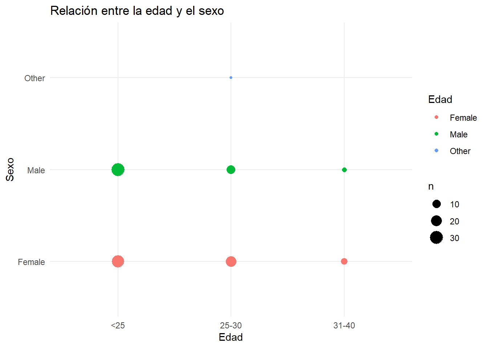
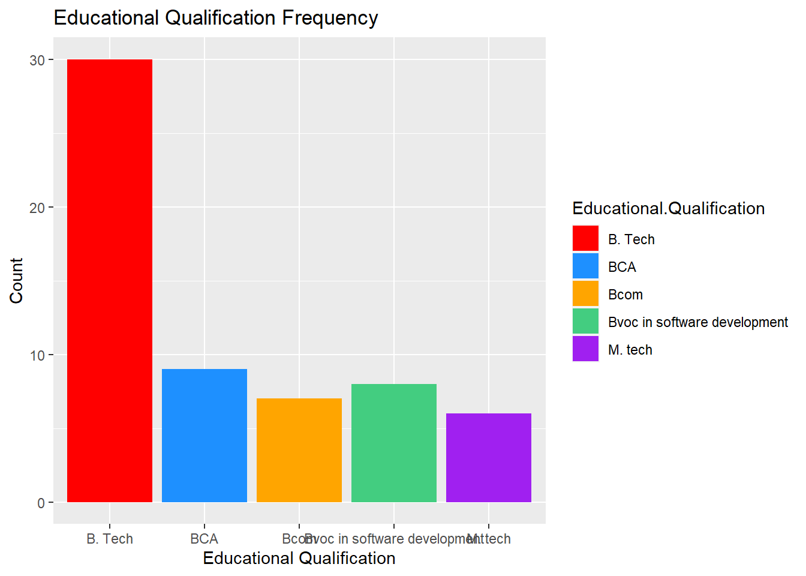
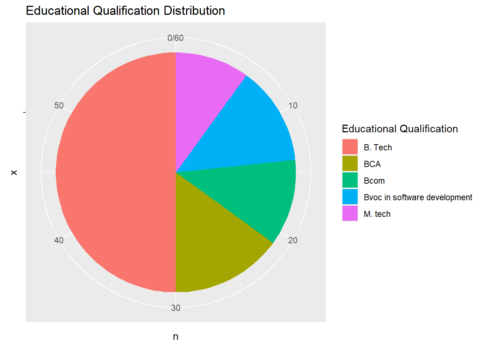
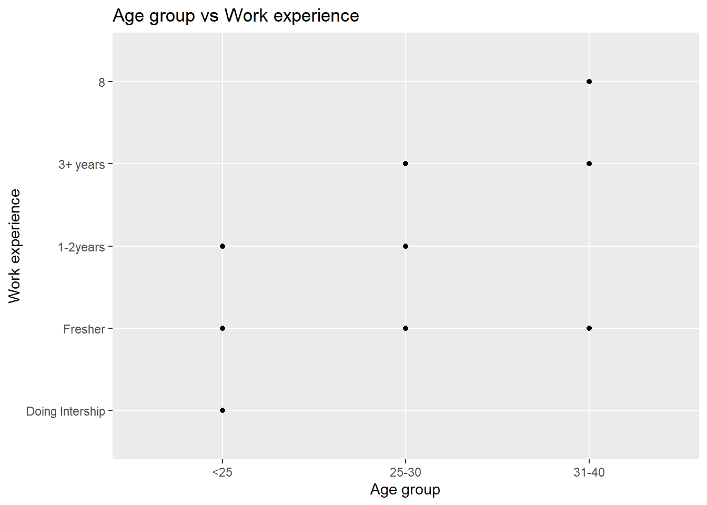
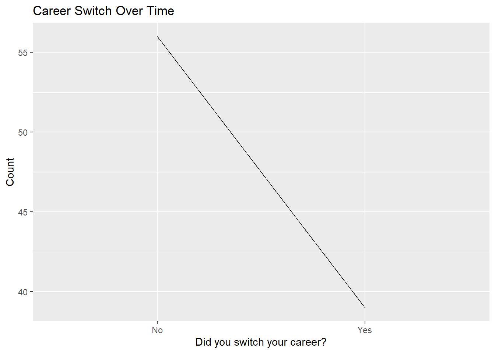

Chapter 6 Visualización de Datos
En este capítulo se mostrarán algunos gráficos que nos ayudaran a comprender y extraer información interesante de el dataset.
6.1 Gráfico que agrupa a los encuestados por sexo y grupo de edad
Podemos observar que la mayor parte de encuestados se encuentra en el rango de edad de menos de 25 años, cosa que puede estar relacionada con la busqueda de empleo
dataset %>%
ggplot(aes(x = `Age.group`, y = Gender, color = Gender)) +
geom_count() +
labs(title = "Relación entre la edad y el sexo", x = "Edad", y = "Sexo", color = "Edad") +
theme_minimal()
6.2 Gráfico de barras:
Muestra la frecuencia de las respuestas más comunes de la columna “Educational Qualification”.
dataset %>%
count(`Educational.Qualification`) %>%
top_n(5, n) %>%
ggplot(aes(x = `Educational.Qualification`, y = n, fill = `Educational.Qualification`)) +
geom_bar(stat = "identity") +
scale_fill_manual(values = c("red", "dodgerblue", "orange", "seagreen3", "purple")) +
labs(x = "Educational Qualification", y = "Count", title = "Educational Qualification Frequency")
6.3 Gráfico de pastel:
Distribución de las respuestas a una pregunta de opción múltiple con mayor frecuencia.
# Al ejecutarlo se bugea pero al ampliar sale bien
dataset %>%
count(`Educational.Qualification`) %>%
top_n(5, n) %>%
ggplot(aes(x = "", y = n, fill = `Educational.Qualification`)) +
geom_bar(stat = "identity", width = 1) +
coord_polar(theta = "y") +
labs(fill = "Educational Qualification", title = "Educational Qualification Distribution")
6.4 Gráfico de dispersión:
Muestra la relación entre edad y experiencia de trabajo.
dataset %>%
na.omit() %>%
ggplot(aes(x = factor(`Age.group`, levels = c("<25", "25-30", "31-40")),
y = factor(`Work.experience`, c("Doing Intership", "Fresher", "1-2years", "3+ years", "8")))) +
geom_point() +
labs(x = "Age group", y = "Work experience", title = "Age group vs Work experience")
6.5 Gráfico de líneas:
Evolución de la cantidad de personas que cambian de carrera a lo largo de los años.
dataset %>%
group_by(`Did.you.switch.your.career.`) %>%
summarize(count = n()) %>%
ggplot(aes(x = `Did.you.switch.your.career.`, y = count, group = 1)) +
geom_line() +
labs(x = "Did you switch your career?", y = "Count", title = "Career Switch Over Time")